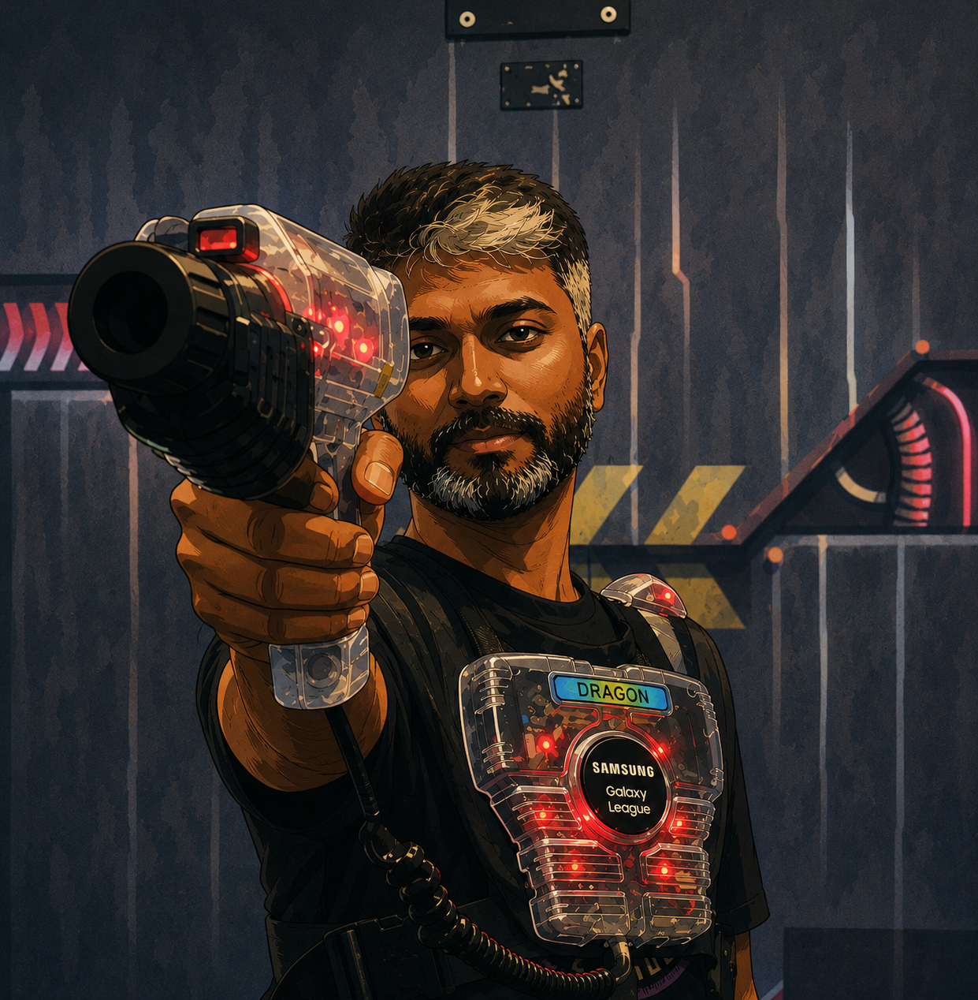

👤I'm Sachin Desai, a Technical Animator with a background in rigging, pipeline tools, Unity integration, and real-device performance testing for mobile games.
I've worked with EA, Ubisoft Abu Dhabi, and Lila Games, Bangalore, building production rigs, Maya/Python tools, FBX/LOD pipelines, and profiling animation systems on Android hardware.
My work sits between art and engineering: I write shaders, automate export pipelines, benchmark Animator vs Playables, VAT vs Skinned, and profile shadow and VFX cost on real devices.
This portfolio covers rigging tools, performance studies, Unity animation setups, shaders, and pipeline automation.